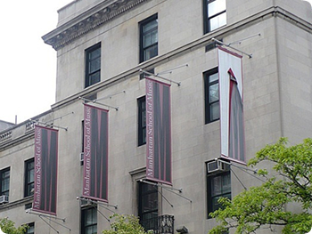

 曼哈顿音乐学院，位于世界最伟大城市之一的纽约，自1917 年建校以来，就对纽约充满活力的文化做出了巨大贡献。它是美国主要的私立音乐学院之一, 现有教员275 名，及来自40 个国家的学生800 名，师生关系良好。学校在所有专业如管弦乐, 钢琴, 伴奏, 作曲, 萨克斯管, 吉他, 风管乐器和爵士乐等都提供了本科学位、硕士学位和博士学位，学校专门开设预科班在星期六帮助小孩和青年人开发和培养他们的音乐技能。
开发天赋和提高技能是所有音乐学院的使命,曼哈顿音院将成为学生职业生涯的一个很好的起点。我们相信：给学生提供自由创作和表演的机会，让他们积累表演经验，是对他们今后职业生涯最好的帮助。在曼哈顿音乐学校, 表演不仅仅是学生的一个目标，这已经是他们的生活的整体部分。以400 个音乐会, 吟诵,还有每年主要课程, 学校以工作的音乐家能量产生共鸣。以在校园的广泛的表现机会，做自由职业者的机会和开始开发专业联络网络, 当他们仍然在学校时，学生被鼓励思考和发挥作为专业音乐家的才能. 这是给我们的学生最佳的机会去造就他们的天分，智慧和严谨训练的强有力的汇合。
曼哈顿音乐学院所设学位:
Bachelor of Music音乐本科学位
Master of Music 音乐硕士学位
Master of Arts 文学硕士学位（只限音乐教育，由哥伦比亚大学和曼哈顿音乐学院联合颁发）
Doctor of Musical Arts (DMA)音乐博士学位
Pinchas Zukerman Performance Program （祖克曼课程）
曼哈顿音乐学院接受托福成绩：
托福：79 （如托福分数低于79必须参加曼哈顿音乐学院夏季ESL-English as Second Language“英语作为第二语言”培训班）
博士申请人需要托福成绩为：100
雅思：6.5
托福递交号码：2396
如果您想更详细的了解曼哈顿音乐学院的教师介绍，请点击以下连接：
http://www.msmnyc.edu/Instruction-Faculty/Faculty
如果您想更详细的了解曼哈顿音乐学院的专业设置以及所有学位，请点击以下连接：
http://www.msmnyc.edu/Instruction-Faculty/Academic-Departments
如果您想更详细的了解曼哈顿音乐学院招生介绍， 请点击以下连接：
http://www.msmnyc.edu/Admissions/Welcome
12月1日前需提交的网上申请表连接：
http://www.msmnyc.edu/Admissions/Apply-To-MSM/Application-Dates-Deadlines